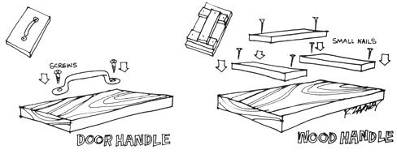

There are many alternative ways of earning some bread without getting into the 9-to-5 ratrace. The contracting of small-scale concrete repairs is one that any able-bodied man can start with less than a $5.00 investment and-with a little sense and a fair amount of hard work-parlay into an operation as large as he wants to make it.
You'll need a bag of cement (a sack of light cement costs less than $2.00), a hammer, chisel, small broom, some sand, gravel, a five-gallon can of water, some old boards and a small float. (The small float is a piece of smooth 1"x4" board about nine inches long with a handle on top, used for finishing off the concrete. Once your business is rolling, you may want to invest in a good trowel . . . but, chances are, you'll still keep that old float handy and use it often.)
Put all these supplies in the back of your jalopy and drive to a suburban area of any big city (one-family houses, five to ten years old, in the middle income section are the best prospects). Cruise along slowly until you see a crack or broken section in the side walk, someone's drive or the foundation of a house. As soon as you see anything that needs cement repair, stop and speak to the owner.
Point out the liabilities involved if someone falls on a broken sidewalk and emphasize that expensive repairs later can be completely headed off now with the proper low-cost preventive maintenance. When you quote a price of only $2.00 to $5.00 for most little jobs, they're usually yours and you can begin immediately.
If the crack is small, enlarge it to a width of about two inches with your hammer and chisel. Mix some cement, sand and gravel (usually one part cement, two of sand and three of gravel is a good mix) directly on the sidewalk or a piece of your scrap lumber. Add water until the patching material is the consistency of soft dough, wet the crack well so the new concrete will adhere to the old and trowel the new filler into the old crack. Tamp the new concrete firmly, level and smooth its surface with the float, sweep the surrounding area with your broom, cover the new work with an old board and collect your money.
Operate this little business only on good days, as a rainstorm can ruin your work and-once you find a prime neighborhood-go back day after day until you've covered it completely.
Try to take only the smaller jobs, at least in the beginning, and you'll earn the most for the least effort. Later, as you plow some of your cash into better equipment, you can tackle the larger projects. A friend of mine started patching sidewalks in just this way when he was laid off from his regular job in the 1940's. Soon, he was earning over $200 a week for three days' work. He later expanded, hired help . . . and now owns a full-scale contracting business of his own.
|
 two methods of making the float mentioned below |
|
|